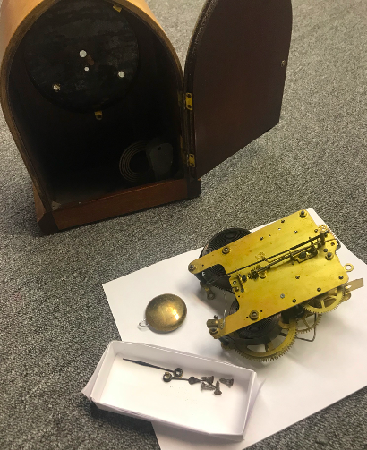
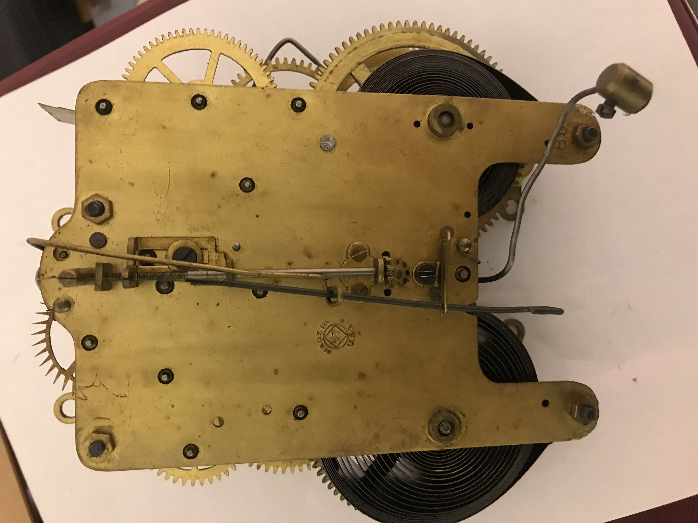
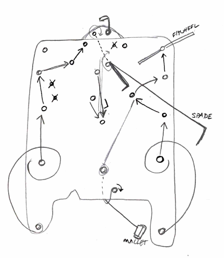

GOAL I disassembled, cleaned, adjusted parts, and reassembled mechanical clocks.  After opening the door of the wooden case, I unscrewed the internal mechanism that was mounted behind the face. The gong (coiled steel) is visible in the lower right of the case. BACKGROUND As society gets more and more complex, we need more accurate ways of remaining in synchrony with the world around us. Types of time keeping devices include: Sundials, water clocks, candles, hourglasses Mechanical clocks associated with Industrial Revolution Wristwatches introduced with WWI Atomic clocks--necessary for more interconnected, world economy, esp. synchronization of stock markets MECHANISM  Back of Clock Mechanisms. A model with a bell (RIGHT) and model without a bell (LEFT) This is the side visible when the wooden case is opened. DESIGN These particular models are from the mid-1920's, and are intended to be displayed on a mantle. After removing the mechanism from the case, a diagram indicating the positions of all gears and springs is necessary to aid later reassembly. The timekeeping gear train (LEFT), and striking gear train (RIGHT) are powered by separate springs.  Typically, the same frame is used for multiple clock models to reduce manufacturing cost. X's in this diagram indicate holes that are not used for the model I was working on.